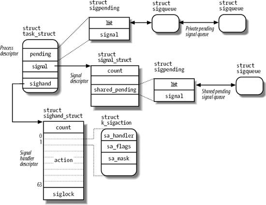

{% include JB/setup %}
{% raw %}
<div>


<a name="understandlk-CHP-11-SECT-1"></a>
<h3 class="docSection1Title">11.1. The Role of Signals</h3><a name="IDX-CHP-11-2593"></a>
<a name="IDX-CHP-11-2594"></a>
<a name="IDX-CHP-11-2595"></a>
<a name="IDX-CHP-11-2596"></a>
<a name="IDX-CHP-11-2597"></a>
<a name="IDX-CHP-11-2598"></a>
<a name="IDX-CHP-11-2599"></a>
<a name="IDX-CHP-11-2600"></a>
<a name="IDX-CHP-11-2601"></a>
<a name="IDX-CHP-11-2602"></a>
<a name="IDX-CHP-11-2603"></a>
<a name="IDX-CHP-11-2604"></a>
<a name="IDX-CHP-11-2605"></a>
<a name="IDX-CHP-11-2606"></a>
<a name="IDX-CHP-11-2607"></a>
<a name="IDX-CHP-11-2608"></a>
<a name="IDX-CHP-11-2609"></a>
<a name="IDX-CHP-11-2610"></a>
<a name="IDX-CHP-11-2611"></a>
<a name="IDX-CHP-11-2612"></a>
<a name="IDX-CHP-11-2613"></a>
<a name="IDX-CHP-11-2614"></a>
<a name="IDX-CHP-11-2615"></a>
<a name="IDX-CHP-11-2616"></a>
<a name="IDX-CHP-11-2617"></a>
<a name="IDX-CHP-11-2618"></a>
<a name="IDX-CHP-11-2619"></a>
<a name="IDX-CHP-11-2620"></a>
<p class="docText1">A <span class="docEmphasis">signal</span> is a very short message that may be sent to a process or a group of processes. The only information given to the process is usually a number identifying the signal; there is no room in standard signals for arguments, a message, or other accompanying information.</p>
<p class="docText1">A set of macros whose names start with the prefix <tt class="calibre25">SIG</tt> is used to identify signals; we have already made a few references to them in previous chapters. For instance, the <tt class="calibre25">SIGCHLD</tt> macro was mentioned in the section "<a class="pcalibre5 docLink pcalibre1" href="understandlk-CHP-3-SECT-4.html#understandlk-CHP-3-SECT-4.1">The clone( ), fork( ), and vfork( ) System Calls</a>" in <a class="pcalibre5 docLink pcalibre1" href="understandlk-CHP-3.html#understandlk-CHP-3">Chapter 3</a>. This macro, which expands into the value 17 in Linux, yields the identifier of the signal that is sent to a parent process when a child stops or terminates. The <tt class="calibre25">SIGSEGV</tt> macro, which expands into the value 11, was mentioned in the section "<a class="pcalibre5 docLink pcalibre1" href="understandlk-CHP-9-SECT-4.html#understandlk-CHP-9-SECT-4">Page Fault Exception Handler</a>" in <a class="pcalibre5 docLink pcalibre1" href="understandlk-CHP-9.html#understandlk-CHP-9">Chapter 9</a>; it yields the identifier of the signal that is sent to a process when it makes an invalid memory reference.</p>
<p class="docText1">Signals serve two main purposes:</p>
<ul class="calibre11"><li class="calibre12"><p class="docText1">To make a process aware that a specific event has occurred</p></li><li class="calibre12"><p class="docText1">To cause a process to execute a <span class="docEmphasis">signal handler</span> function included in its code</p></li></ul>
<p class="docText1">Of course, the two purposes are not mutually exclusive, because often a process must react to some event by executing a specific routine.</p>
<p class="docText1"><a class="pcalibre5 docLink pcalibre1" href="#understandlk-CHP-11-TABLE-1">Table 11-1</a> lists the first 31 signals handled by Linux 2.6 for the 80x86 architecture (some signal numbers, such those associated with <tt class="calibre25">SIGCHLD</tt> or <tt class="calibre25">SIGSTOP</tt>, are architecture-dependent; furthermore, some signals such as <tt class="calibre25">SIGSTKFLT</tt> are defined only for specific architectures). The meanings of the default actions are described in the next section.</p>
<a name="understandlk-CHP-11-TABLE-1"></a><p class="calibre14"><table cellspacing="0" frame="hsides" rules="all" cellpadding="4" width="100%" class="calibre15"><caption class="calibre33"><h5 class="docFigureTitle">Table 11-1. The first 31 signals in Linux/i386</h5></caption><colgroup class="calibre16"><col class="calibre17"/><col class="calibre17"/><col class="calibre17"/><col class="calibre17"/><col class="calibre17"/></colgroup><thead class="calibre18"><tr class="calibre34"><th class="thead" scope="col"><p class="docText1"><span class="calibre5">#</span></p></th><th class="thead" scope="col"><p class="docText1"><span class="calibre5">Signal name</span></p></th><th class="thead" scope="col"><p class="docText1"><span class="calibre5">Default action</span></p></th><th class="thead" scope="col"><p class="docText1"><span class="calibre5">Comment</span></p></th><th class="thead" scope="col"><p class="docText1"><span class="calibre5">POSIX</span></p></th></tr></thead><tr class="calibre2"><td class="docTableCell"><p class="docText2">1</p></td><td class="docTableCell"><p class="docText2"><tt class="calibre25">SIGHUP</tt></p></td><td class="docTableCell"><p class="docText2">Terminate</p></td><td class="docTableCell"><p class="docText2">Hang up controlling terminal or process</p></td><td class="docTableCell"><p class="docText2">Yes</p></td></tr><tr class="calibre2"><td class="docTableCell"><p class="docText2">2</p></td><td class="docTableCell"><p class="docText2"><tt class="calibre25">SIGINT</tt></p></td><td class="docTableCell"><p class="docText2">Terminate</p></td><td class="docTableCell"><p class="docText2">Interrupt from keyboard</p></td><td class="docTableCell"><p class="docText2">Yes</p></td></tr><tr class="calibre2"><td class="docTableCell"><p class="docText2">3</p></td><td class="docTableCell"><p class="docText2"><tt class="calibre25">SIGQUIT</tt></p></td><td class="docTableCell"><p class="docText2">Dump</p></td><td class="docTableCell"><p class="docText2">Quit from keyboard</p></td><td class="docTableCell"><p class="docText2">Yes</p></td></tr><tr class="calibre2"><td class="docTableCell"><p class="docText2">4</p></td><td class="docTableCell"><p class="docText2"><tt class="calibre25">SIGILL</tt></p></td><td class="docTableCell"><p class="docText2">Dump</p></td><td class="docTableCell"><p class="docText2">Illegal instruction</p></td><td class="docTableCell"><p class="docText2">Yes</p></td></tr><tr class="calibre2"><td class="docTableCell"><p class="docText2">5</p></td><td class="docTableCell"><p class="docText2"><tt class="calibre25">SIGTRAP</tt></p></td><td class="docTableCell"><p class="docText2">Dump</p></td><td class="docTableCell"><p class="docText2">Breakpoint for debugging</p></td><td class="docTableCell"><p class="docText2">No</p></td></tr><tr class="calibre2"><td class="docTableCell"><p class="docText2">6</p></td><td class="docTableCell"><p class="docText2"><tt class="calibre25">SIGABRT</tt></p></td><td class="docTableCell"><p class="docText2">Dump</p></td><td class="docTableCell"><p class="docText2">Abnormal termination</p></td><td class="docTableCell"><p class="docText2">Yes</p></td></tr><tr class="calibre2"><td class="docTableCell"><p class="docText2">6</p></td><td class="docTableCell"><p class="docText2"><tt class="calibre25">SIGIOT</tt></p></td><td class="docTableCell"><p class="docText2">Dump</p></td><td class="docTableCell"><p class="docText2">Equivalent to <tt class="calibre25">SIGABRT</tt></p></td><td class="docTableCell"><p class="docText2">No</p></td></tr><tr class="calibre2"><td class="docTableCell"><p class="docText2">7</p></td><td class="docTableCell"><p class="docText2"><tt class="calibre25">SIGBUS</tt></p></td><td class="docTableCell"><p class="docText2">Dump</p></td><td class="docTableCell"><p class="docText2">Bus error</p></td><td class="docTableCell"><p class="docText2">No</p></td></tr><tr class="calibre2"><td class="docTableCell"><p class="docText2">8</p></td><td class="docTableCell"><p class="docText2"><tt class="calibre25">SIGFPE</tt></p></td><td class="docTableCell"><p class="docText2">Dump</p></td><td class="docTableCell"><p class="docText2">Floating-point exception</p></td><td class="docTableCell"><p class="docText2">Yes</p></td></tr><tr class="calibre2"><td class="docTableCell"><p class="docText2">9</p></td><td class="docTableCell"><p class="docText2"><tt class="calibre25">SIGKILL</tt></p></td><td class="docTableCell"><p class="docText2">Terminate</p></td><td class="docTableCell"><p class="docText2">Forced-process termination</p></td><td class="docTableCell"><p class="docText2">Yes</p></td></tr><tr class="calibre2"><td class="docTableCell"><p class="docText2">10</p></td><td class="docTableCell"><p class="docText2"><tt class="calibre25">SIGUSR1</tt></p></td><td class="docTableCell"><p class="docText2">Terminate</p></td><td class="docTableCell"><p class="docText2">Available to processes</p></td><td class="docTableCell"><p class="docText2">Yes</p></td></tr><tr class="calibre2"><td class="docTableCell"><p class="docText2">11</p></td><td class="docTableCell"><p class="docText2"><tt class="calibre25">SIGSEGV</tt></p></td><td class="docTableCell"><p class="docText2">Dump</p></td><td class="docTableCell"><p class="docText2">Invalid memory reference</p></td><td class="docTableCell"><p class="docText2">Yes</p></td></tr><tr class="calibre2"><td class="docTableCell"><p class="docText2">12</p></td><td class="docTableCell"><p class="docText2"><tt class="calibre25">SIGUSR2</tt></p></td><td class="docTableCell"><p class="docText2">Terminate</p></td><td class="docTableCell"><p class="docText2">Available to processes</p></td><td class="docTableCell"><p class="docText2">Yes</p></td></tr><tr class="calibre2"><td class="docTableCell"><p class="docText2">13</p></td><td class="docTableCell"><p class="docText2"><tt class="calibre25">SIGPIPE</tt></p></td><td class="docTableCell"><p class="docText2">Terminate</p></td><td class="docTableCell"><p class="docText2">Write to pipe with no readers</p></td><td class="docTableCell"><p class="docText2">Yes</p></td></tr><tr class="calibre2"><td class="docTableCell"><p class="docText2">14</p></td><td class="docTableCell"><p class="docText2"><tt class="calibre25">SIGALRM</tt></p></td><td class="docTableCell"><p class="docText2">Terminate</p></td><td class="docTableCell"><p class="docText2">Real-timerclock</p></td><td class="docTableCell"><p class="docText2">Yes</p></td></tr><tr class="calibre2"><td class="docTableCell"><p class="docText2">15</p></td><td class="docTableCell"><p class="docText2"><tt class="calibre25">SIGTERM</tt></p></td><td class="docTableCell"><p class="docText2">Terminate</p></td><td class="docTableCell"><p class="docText2">Process termination</p></td><td class="docTableCell"><p class="docText2">Yes</p></td></tr><tr class="calibre2"><td class="docTableCell"><p class="docText2">16</p></td><td class="docTableCell"><p class="docText2"><tt class="calibre25">SIGSTKFLT</tt></p></td><td class="docTableCell"><p class="docText2">Terminate</p></td><td class="docTableCell"><p class="docText2">Coprocessor stack error</p></td><td class="docTableCell"><p class="docText2">No</p></td></tr><tr class="calibre2"><td class="docTableCell"><p class="docText2">17</p></td><td class="docTableCell"><p class="docText2"><tt class="calibre25">SIGCHLD</tt></p></td><td class="docTableCell"><p class="docText2">Ignore</p></td><td class="docTableCell"><p class="docText2">Child process stopped or terminated, or got signal if traced</p></td><td class="docTableCell"><p class="docText2">Yes</p></td></tr><tr class="calibre2"><td class="docTableCell"><p class="docText2">18</p></td><td class="docTableCell"><p class="docText2"><tt class="calibre25">SIGCONT</tt></p></td><td class="docTableCell"><p class="docText2">Continue</p></td><td class="docTableCell"><p class="docText2">Resume execution, if stopped</p></td><td class="docTableCell"><p class="docText2">Yes</p></td></tr><tr class="calibre2"><td class="docTableCell"><p class="docText2">19</p></td><td class="docTableCell"><p class="docText2"><tt class="calibre25">SIGSTOP</tt></p></td><td class="docTableCell"><p class="docText2">Stop</p></td><td class="docTableCell"><p class="docText2">Stop process execution</p></td><td class="docTableCell"><p class="docText2">Yes</p></td></tr><tr class="calibre2"><td class="docTableCell"><p class="docText2">20</p></td><td class="docTableCell"><p class="docText2"><tt class="calibre25">SIGTSTP</tt></p></td><td class="docTableCell"><p class="docText2">Stop</p></td><td class="docTableCell"><p class="docText2">Stop process issued from tty</p></td><td class="docTableCell"><p class="docText2">Yes</p></td></tr><tr class="calibre2"><td class="docTableCell"><p class="docText2">21</p></td><td class="docTableCell"><p class="docText2"><tt class="calibre25">SIGTTIN</tt></p></td><td class="docTableCell"><p class="docText2">Stop</p></td><td class="docTableCell"><p class="docText2">Background process requires input</p></td><td class="docTableCell"><p class="docText2">Yes</p></td></tr><tr class="calibre2"><td class="docTableCell"><p class="docText2">22</p></td><td class="docTableCell"><p class="docText2"><tt class="calibre25">SIGTTOU</tt></p></td><td class="docTableCell"><p class="docText2">Stop</p></td><td class="docTableCell"><p class="docText2">Background process requires output</p></td><td class="docTableCell"><p class="docText2">Yes</p></td></tr><tr class="calibre2"><td class="docTableCell"><p class="docText2">23</p></td><td class="docTableCell"><p class="docText2"><tt class="calibre25">SIGURG</tt></p></td><td class="docTableCell"><p class="docText2">Ignore</p></td><td class="docTableCell"><p class="docText2">Urgent condition on socket</p></td><td class="docTableCell"><p class="docText2">No</p></td></tr><tr class="calibre2"><td class="docTableCell"><p class="docText2">24</p></td><td class="docTableCell"><p class="docText2"><tt class="calibre25">SIGXCPU</tt></p></td><td class="docTableCell"><p class="docText2">Dump</p></td><td class="docTableCell"><p class="docText2">CPU time limit exceeded</p></td><td class="docTableCell"><p class="docText2">No</p></td></tr><tr class="calibre2"><td class="docTableCell"><p class="docText2">25</p></td><td class="docTableCell"><p class="docText2"><tt class="calibre25">SIGXFSZ</tt></p></td><td class="docTableCell"><p class="docText2">Dump</p></td><td class="docTableCell"><p class="docText2">File size limit exceeded</p></td><td class="docTableCell"><p class="docText2">No</p></td></tr><tr class="calibre2"><td class="docTableCell"><p class="docText2">26</p></td><td class="docTableCell"><p class="docText2"><tt class="calibre25">SIGVTALRM</tt></p></td><td class="docTableCell"><p class="docText2">Terminate</p></td><td class="docTableCell"><p class="docText2">Virtual timer clock</p></td><td class="docTableCell"><p class="docText2">No</p></td></tr><tr class="calibre2"><td class="docTableCell"><p class="docText2">27</p></td><td class="docTableCell"><p class="docText2"><tt class="calibre25">SIGPROF</tt></p></td><td class="docTableCell"><p class="docText2">Terminate</p></td><td class="docTableCell"><p class="docText2">Profile timer clock</p></td><td class="docTableCell"><p class="docText2">No</p></td></tr><tr class="calibre2"><td class="docTableCell"><p class="docText2">28</p></td><td class="docTableCell"><p class="docText2"><tt class="calibre25">SIGWINCH</tt></p></td><td class="docTableCell"><p class="docText2">Ignore</p></td><td class="docTableCell"><p class="docText2">Window resizing</p></td><td class="docTableCell"><p class="docText2">No</p></td></tr><tr class="calibre2"><td class="docTableCell"><p class="docText2">29</p></td><td class="docTableCell"><p class="docText2"><tt class="calibre25">SIGIO</tt></p></td><td class="docTableCell"><p class="docText2">Terminate</p></td><td class="docTableCell"><p class="docText2">I/O now possible</p></td><td class="docTableCell"><p class="docText2">No</p></td></tr><tr class="calibre2"><td class="docTableCell"><p class="docText2">29</p></td><td class="docTableCell"><p class="docText2"><tt class="calibre25">SIGPOLL</tt></p></td><td class="docTableCell"><p class="docText2">Terminate</p></td><td class="docTableCell"><p class="docText2">Equivalent to <tt class="calibre25">SIGIO</tt></p></td><td class="docTableCell"><p class="docText2">No</p></td></tr><tr class="calibre2"><td class="docTableCell"><p class="docText2">30</p></td><td class="docTableCell"><p class="docText2"><tt class="calibre25">SIGPWR</tt></p></td><td class="docTableCell"><p class="docText2">Terminate</p></td><td class="docTableCell"><p class="docText2">Power supply failure</p></td><td class="docTableCell"><p class="docText2">No</p></td></tr><tr class="calibre2"><td class="docTableCell"><p class="docText2">31</p></td><td class="docTableCell"><p class="docText2"><tt class="calibre25">SIGSYS</tt></p></td><td class="docTableCell"><p class="docText2">Dump</p></td><td class="docTableCell"><p class="docText2">Bad system call</p></td><td class="docTableCell"><p class="docText2">No</p></td></tr><tr class="calibre2"><td class="docTableCell"><p class="docText2">31</p></td><td class="docTableCell"><p class="docText2"><tt class="calibre25">SIGUNUSED</tt></p></td><td class="docTableCell"><p class="docText2">Dump</p></td><td class="docTableCell"><p class="docText2">Equivalent to <tt class="calibre25">SIGSYS</tt></p></td><td class="docTableCell"><p class="docText2">No</p></td></tr></table></p><br class="calibre7"/>
<p class="docText1">Besides the <span class="docEmphasis">regular signals</span><a name="IDX-CHP-11-2621"></a>
<a name="IDX-CHP-11-2622"></a> 
 described in this table, the POSIX standard has introduced a new class of signals denoted as <span class="docEmphasis">real-time signals</span><a name="IDX-CHP-11-2623"></a>
<a name="IDX-CHP-11-2624"></a> 
; their signal numbers range from 32 to 64 on Linux. They mainly differ from regular signals because they are always queued so that multiple signals sent will be received. On the other hand, regular signals of the same kind are not queued: if a regular signal is sent many times in a row, just one of them is delivered to the receiving process. Although the Linux kernel does not use real-time signals, it fully supports the POSIX standard by means of several specific system calls.</p>
<p class="docText1">A number of system calls allow programmers to send signals and determine how their processes respond to the signals they receive. <a class="pcalibre5 docLink pcalibre1" href="#understandlk-CHP-11-TABLE-2">Table 11-2</a> summarizes these calls; their behavior is described in detail in the later section "<a class="pcalibre5 docLink pcalibre1" href="understandlk-CHP-11-SECT-4.html#understandlk-CHP-11-SECT-4">System Calls Related to Signal Handling</a>."</p>
<a name="understandlk-CHP-11-TABLE-2"></a><p class="calibre14"><table cellspacing="0" frame="hsides" rules="all" cellpadding="4" width="100%" class="calibre15"><caption class="calibre33"><h5 class="docFigureTitle">Table 11-2. The most significant system calls related to signals</h5></caption><colgroup class="calibre16"><col class="calibre17"/><col class="calibre17"/></colgroup><thead class="calibre18"><tr class="calibre34"><th class="thead" scope="col"><p class="docText1"><span class="calibre5">System call</span></p></th><th class="thead" scope="col"><p class="docText1"><span class="calibre5">Description</span></p></th></tr></thead><tr class="calibre2"><td class="docTableCell"><p class="docText2"><tt class="calibre25">kill( )</tt><a name="IDX-CHP-11-2625"></a>
</p></td><td class="docTableCell"><p class="docText2">Send a signal to a thread group</p></td></tr><tr class="calibre2"><td class="docTableCell"><p class="docText2">tkill( )<a name="IDX-CHP-11-2626"></a>
</p></td><td class="docTableCell"><p class="docText2">Send a signal to a process</p></td></tr><tr class="calibre2"><td class="docTableCell"><p class="docText2">tgkill( )<a name="IDX-CHP-11-2627"></a>
</p></td><td class="docTableCell"><p class="docText2">Send a signal to a process in a specific thread group</p></td></tr><tr class="calibre2"><td class="docTableCell"><p class="docText2"><tt class="calibre25">sigaction( )</tt><a name="IDX-CHP-11-2628"></a>
</p></td><td class="docTableCell"><p class="docText2">Change the action associated with a signal</p></td></tr><tr class="calibre2"><td class="docTableCell"><p class="docText2"><tt class="calibre25">signal( )</tt><a name="IDX-CHP-11-2629"></a>
</p></td><td class="docTableCell"><p class="docText2">Similar to <tt class="calibre25">sigaction( )</tt></p></td></tr><tr class="calibre2"><td class="docTableCell"><p class="docText2"><tt class="calibre25">sigpending( )</tt><a name="IDX-CHP-11-2630"></a>
</p></td><td class="docTableCell"><p class="docText2">Check whether there are pending signals</p></td></tr><tr class="calibre2"><td class="docTableCell"><p class="docText2"><tt class="calibre25">sigprocmask( )</tt><a name="IDX-CHP-11-2631"></a>
</p></td><td class="docTableCell"><p class="docText2">Modify the set of blocked signals</p></td></tr><tr class="calibre2"><td class="docTableCell"><p class="docText2"><tt class="calibre25">sigsuspend( )</tt><a name="IDX-CHP-11-2632"></a>
</p></td><td class="docTableCell"><p class="docText2">Wait for a signal</p></td></tr><tr class="calibre2"><td class="docTableCell"><p class="docText2"><tt class="calibre25">rt_sigaction( )</tt><a name="IDX-CHP-11-2633"></a>
</p></td><td class="docTableCell"><p class="docText2">Change the action associated with a real-time signal</p></td></tr><tr class="calibre2"><td class="docTableCell"><p class="docText2"><tt class="calibre25">rt_sigpending( )</tt><a name="IDX-CHP-11-2634"></a>
</p></td><td class="docTableCell"><p class="docText2">Check whether there are pending real-time signals</p></td></tr><tr class="calibre2"><td class="docTableCell"><p class="docText2"><tt class="calibre25">rt_sigprocmask( )</tt><a name="IDX-CHP-11-2635"></a>
</p></td><td class="docTableCell"><p class="docText2">Modify the set of blocked real-time signals</p></td></tr><tr class="calibre2"><td class="docTableCell"><p class="docText2"><tt class="calibre25">rt_sigqueueinfo( )</tt><a name="IDX-CHP-11-2636"></a>
</p></td><td class="docTableCell"><p class="docText2">Send a real-time signal to a thread group</p></td></tr><tr class="calibre2"><td class="docTableCell"><p class="docText2"><tt class="calibre25">rt_sigsuspend( )</tt><a name="IDX-CHP-11-2637"></a>
</p></td><td class="docTableCell"><p class="docText2">Wait for a real-time signal</p></td></tr><tr class="calibre2"><td class="docTableCell"><p class="docText2"><tt class="calibre25">rt_sigtimedwait( )</tt><a name="IDX-CHP-11-2638"></a>
</p></td><td class="docTableCell"><p class="docText2">Similar to <tt class="calibre25">rt_sigsuspend( )</tt></p></td></tr></table></p><br class="calibre7"/>
<p class="docText1">An important characteristic of signals is that they may be sent at any time to a process whose state is usually unpredictable. Signals sent to a process that is not currently executing must be saved by the kernel until that process resumes execution. Blocking a signal (described later) requires that delivery of the signal be held off until it is later unblocked, which exacerbates the problem of signals being raised before they can be delivered.</p>
<p class="docText1">Therefore, the kernel distinguishes two different phases related to signal transmission:</p>
<dl class="docText1"><dt class="calibre7"><br class="calibre7"/><p class="calibre14"><span class="docPubcolor"><span class="docEmphasis">Signal generation</span></span></p></dt>
<dd class="calibre20"><p class="docList">The kernel updates a data structure of the destination process to represent that a new signal has been sent.</p></dd><dt class="calibre7"><br class="calibre7"/><p class="calibre14"><span class="docPubcolor"><span class="docEmphasis">Signal delivery</span></span></p></dt>
<dd class="calibre20"><p class="docList">The kernel forces the destination process to react to the signal by changing its execution state, by starting the execution of a specified signal handler, or both.</p></dd></dl>
<p class="docText1">Each signal generated can be delivered once, at most. Signals are consumable resources: once they have been delivered, all process descriptor information that refers to their previous existence is canceled.</p>
<p class="docText1">Signals that have been generated but not yet delivered are called <span class="docEmphasis">pending signals</span><a name="IDX-CHP-11-2639"></a>
<a name="IDX-CHP-11-2640"></a> 
. At any time, only one pending signal of a given type may exist for a process; additional pending signals of the same type to the same process are not queued but simply discarded. Real-time signals are different, though: there can be several pending signals of the same type.</p>
<p class="docText1">In general, a signal may remain pending for an unpredictable amount of time. The following factors must be taken into consideration:</p>
<ul class="calibre11"><li class="calibre12"><p class="docText1">Signals are usually delivered only to the currently running process (that is, to the <tt class="calibre25">current</tt> process).</p></li><li class="calibre12"><p class="docText1">Signals of a given type may be selectively <span class="docEmphasis">blocked</span> by a process (see the later section "<a class="pcalibre5 docLink pcalibre1" href="understandlk-CHP-11-SECT-4.html#understandlk-CHP-11-SECT-4.5">Modifying the Set of Blocked Signals</a>"). In this case, the process does not receive the signal until it removes the block.</p></li><li class="calibre12"><p class="docText1">When a process executes a signal-handler function, it usually <span class="docEmphasis">masks</span> the corresponding signali.e., it automatically blocks the signal until the handler terminates. A signal handler therefore cannot be interrupted by another occurrence of the handled signal, and the function doesn't need to be reentrant.</p></li></ul>
<p class="docText1">Although the notion of signals is intuitive, the kernel implementation is rather complex. The kernel must:</p>
<ul class="calibre11"><li class="calibre12"><p class="docText1">Remember which signals are blocked by each process.</p></li><li class="calibre12"><p class="docText1">When switching from Kernel Mode to User Mode, check whether a signal for a process has arrived. This happens at almost every timer interrupt (roughly every millisecond).</p></li><li class="calibre12"><p class="docText1">Determine whether the signal can be ignored. This happens when all of the following conditions are fulfilled:</p><ul class="calibre61"><li class="calibre12"><p class="docText1">The destination process is not traced by another process (the <tt class="calibre25">PT_PTRACED</tt> flag in the process descriptor <tt class="calibre25">ptrace</tt> field is equal to 0).<sup class="docFootnote"><a class="pcalibre5 docLink pcalibre1" href="#understandlk-CHP-11-FN1">[*]</a></sup></p><blockquote class="calibre22"><p class="docFootnote1"><sup class="calibre24"><a name="understandlk-CHP-11-FN1">[*]</a></sup> If a process receives a signal while it is being traced, the kernel stops the process and notifies the tracing process by sending a <tt class="calibre42">SIGCHLD</tt> signal to it. The tracing process may, in turn, resume execution of the traced process by means of a <tt class="calibre42">SIGCONT</tt> signal.</p></blockquote></li><li class="calibre12"><p class="docText1">The signal is not blocked by the destination process.</p></li><li class="calibre12"><p class="docText1">The signal is being ignored by the destination process (either because the process explicitly ignored it or because the process did not change the default action of the signal and that action is "ignore").</p></li></ul></li><li class="calibre12"><p class="docText1">Handle the signal, which may require switching the process to a handler function at any point during its execution and restoring the original execution context after the function returns.</p></li></ul>
<p class="docText1">Moreover, Linux must take into account the different semantics for signals adopted by BSD<a name="IDX-CHP-11-2641"></a> 
 and System V<a name="IDX-CHP-11-2642"></a> 
; furthermore, it must comply with the rather cumbersome POSIX requirements.</p>
<a name="understandlk-CHP-11-SECT-1.1"></a>
<h4 class="docSection2Title">11.1.1. Actions Performed upon Delivering a Signal</h4><a name="IDX-CHP-11-2643"></a>
<p class="docText1">There are three ways in which a process can respond to a signal:</p>
<div class="calibre44"><ol class="docList1" type="1"><li class="calibre12"><div class="calibre45"><p class="docList">Explicitly ignore the signal.</p></div></li><li class="calibre12"><div class="calibre45"><p class="docList">Execute the <span class="docEmphasis">default action</span> associated with the signal (see <a class="pcalibre5 docLink pcalibre1" href="#understandlk-CHP-11-TABLE-1">Table 11-1</a>). This action, which is predefined by the kernel, depends on the signal type and may be any one of the following:</p><dl class="docList5"><dt class="calibre7"><br class="calibre7"/><p class="calibre14"><span class="docPubcolor"><span class="docEmphasis">Terminate</span></span></p></dt>
<dd class="calibre20"><p class="docList">The process is terminated (killed).</p></dd>
<dt class="calibre7"><br class="calibre7"/><p class="calibre14"><span class="docPubcolor"><span class="docEmphasis">Dump</span></span></p></dt>
<dd class="calibre20"><p class="docList">The process is terminated (killed) and a <tt class="calibre25">core</tt> file containing its execution context is created, if possible; this file may be used for debug purposes.</p></dd>
<dt class="calibre7"><br class="calibre7"/><p class="calibre14"><span class="docPubcolor"><span class="docEmphasis">Ignore</span></span></p></dt>
<dd class="calibre20"><p class="docList">The signal is ignored.</p></dd>
<dt class="calibre7"><br class="calibre7"/><p class="calibre14"><span class="docPubcolor"><span class="docEmphasis">Stop</span></span></p></dt>
<dd class="calibre20"><p class="docList">The process is stoppedi.e., put in the <tt class="calibre25">TASK_STOPPED</tt> state (see the section "<a class="pcalibre5 docLink pcalibre1" href="understandlk-CHP-3-SECT-2.html#understandlk-CHP-3-SECT-2.1">Process State</a>" in <a class="pcalibre5 docLink pcalibre1" href="understandlk-CHP-3.html#understandlk-CHP-3">Chapter 3</a>).</p></dd>
<dt class="calibre7"><br class="calibre7"/><p class="calibre14"><span class="docPubcolor"><span class="docEmphasis">Continue</span></span></p></dt>
<dd class="calibre20"><p class="docList">If the process was stopped (<tt class="calibre25">TASK_STOPPED</tt>), it is put into the <tt class="calibre25">TASK_RUNNING</tt> state.</p></dd></dl></div></li><li class="calibre12"><div class="calibre45"><p class="docList">Catch the signal by invoking a corresponding signal-handler function.</p></div></li></ol></div>
<p class="docText1">Notice that blocking a signal is different from ignoring it. A signal is not delivered as long as it is blocked; it is delivered only after it has been unblocked. An ignored signal is always delivered, and there is no further action.</p>
<p class="docText1">The <tt class="calibre25">SIGKILL</tt> and <tt class="calibre25">SIGSTOP</tt> signals cannot be ignored, caught, or blocked, and their default actions<a name="IDX-CHP-11-2644"></a> 
 must always be executed. Therefore, <tt class="calibre25">SIGKILL</tt> and <tt class="calibre25">SIGSTOP</tt> allow a user with appropriate privileges to terminate and to stop, respectively, every process,<sup class="docFootnote"><a class="pcalibre5 docLink pcalibre1" href="#understandlk-CHP-11-FN2">[*]</a></sup> regardless of the defenses taken by the program it is executing.</p><blockquote class="calibre22"><p class="docFootnote1"><sup class="calibre24"><a name="understandlk-CHP-11-FN2">[*]</a></sup> There are two exceptions: it is not possible to send a signal to process 0 (<span class="docEmphasis">swapper</span>), and signals sent to process 1 (<span class="docEmphasis">init</span>) are always discarded unless they are caught. Therefore, process 0 never dies, while process 1 dies only when the <span class="docEmphasis">init</span> program terminates.</p></blockquote>
<p class="docText1">A signal is <span class="docEmphasis">fatal</span> for a given process if delivering the signal causes the kernel to kill the process. The <tt class="calibre25">SIGKILL</tt> signal is always fatal; moreover, each signal whose default action is "Terminate" and which is not caught by a process is also fatal for that process. Notice, however, that a signal caught by a process and whose corresponding signal-handler function terminates the process is not fatal, because the process chose to terminate itself rather than being killed by the kernel.</p>
<a name="understandlk-CHP-11-SECT-1.2"></a>
<h4 class="docSection2Title">11.1.2. POSIX Signals and Multithreaded Applications</h4><a name="IDX-CHP-11-2645"></a>
<a name="IDX-CHP-11-2646"></a>
<a name="IDX-CHP-11-2647"></a>
<a name="IDX-CHP-11-2648"></a>
<a name="IDX-CHP-11-2649"></a>
<a name="IDX-CHP-11-2650"></a>
<p class="docText1">The POSIX 1003.1 standard has some stringent requirements for signal handling of multithreaded applications:</p>
<ul class="calibre11"><li class="calibre12"><p class="docText1">Signal handlers must be shared among all threads of a multithreaded application; however, each thread must have its own mask of pending and blocked signals.</p></li><li class="calibre12"><p class="docText1">The <tt class="calibre25">kill( )</tt><a name="IDX-CHP-11-2651"></a>
<a name="IDX-CHP-11-2652"></a> 
 and <tt class="calibre25">sigqueue( )</tt><a name="IDX-CHP-11-2653"></a> 
 POSIX library functions (see the later section "<a class="pcalibre5 docLink pcalibre1" href="understandlk-CHP-11-SECT-4.html#understandlk-CHP-11-SECT-4">System Calls Related to Signal Handling</a>") must send signals to whole multithreaded applications, not to a specific thread. The same holds for all signals (such as <tt class="calibre25">SIGCHLD</tt>, <tt class="calibre25">SIGINT</tt>, or <tt class="calibre25">SIGQUIT</tt>) generated by the kernel.</p></li><li class="calibre12"><p class="docText1">Each signal sent to a multithreaded application will be delivered to just one thread, which is arbitrarily chosen by the kernel among the threads that are not blocking that signal.</p></li><li class="calibre12"><p class="docText1">If a fatal signal is sent to a multithreaded application, the kernel will kill all threads of the applicationnot just the thread to which the signal has been delivered.</p></li></ul>
<p class="docText1">In order to comply with the POSIX standard, the Linux 2.6 kernel implements a multithreaded application as a set of lightweight processes belonging to the same thread group (see the section "<a class="pcalibre5 docLink pcalibre1" href="understandlk-CHP-3-SECT-1.html#understandlk-CHP-3-SECT-1">Processes, Lightweight Processes, and Threads</a>" in <a class="pcalibre5 docLink pcalibre1" href="understandlk-CHP-3.html#understandlk-CHP-3">Chapter 3</a>).</p>
<p class="docText1">In this chapter the term "thread group" denotes any thread group, even if it is composed by a single (conventional) process. For instance, when we state that <tt class="calibre25">kill( )</tt> can send a signal to a thread group, we imply that this system call can send a signal to a conventional process, too. We will use the term "process" to denote either a conventional process or a lightweight processthat is, a specific member of a thread group.</p>
<p class="docText1">Furthermore, a pending signal is <span class="docEmphasis">private</span> if it has been sent to a specific process; it is <span class="docEmphasis">shared</span> if it has been sent to a whole thread group.</p>
<a name="understandlk-CHP-11-SECT-1.3"></a>
<h4 class="docSection2Title">11.1.3. Data Structures Associated with Signals</h4><a name="IDX-CHP-11-2654"></a>
<p class="docText1">For each process in the system, the kernel must keep track of what signals are currently pending or masked; the kernel must also keep track of how every thread group is supposed to handle every signal. To do this, the kernel uses several data structures<a name="IDX-CHP-11-2655"></a> 
 accessible from the process descriptor. The most significant ones are shown in <a class="pcalibre5 docLink pcalibre1" href="#understandlk-CHP-11-FIG-1">Figure 11-1</a>.</p>
<a name="understandlk-CHP-11-FIG-1"></a><p class="calibre14"><center class="calibre8">
<h5 class="docFigureTitle">Figure 11-1. The most significant data structures related to signal handling</h5>
</center></p><br class="calibre7"/>
<p class="docText1">The fields of the process descriptor related to signal handling are listed in <a class="pcalibre5 docLink pcalibre1" href="#understandlk-CHP-11-TABLE-3">Table 11-3</a>.</p>
<a name="understandlk-CHP-11-TABLE-3"></a><p class="calibre14"><table cellspacing="0" frame="hsides" rules="all" cellpadding="4" width="100%" class="calibre15"><caption class="calibre33"><h5 class="docFigureTitle">Table 11-3. Process descriptor fields related to signal handling</h5></caption><colgroup class="calibre16"><col class="calibre17"/><col class="calibre17"/><col class="calibre17"/></colgroup><thead class="calibre18"><tr class="calibre34"><th class="thead" scope="col"><p class="docText1"><span class="calibre5">Type</span></p></th><th class="thead" scope="col"><p class="docText1"><span class="calibre5">Name</span></p></th><th class="thead" scope="col"><p class="docText1"><span class="calibre5">Description</span></p></th></tr></thead><tr class="calibre2"><td class="docTableCell"><p class="docText2"><tt class="calibre25">struct signal_struct *</tt></p></td><td class="docTableCell"><p class="docText2"><tt class="calibre25">signal</tt></p></td><td class="docTableCell"><p class="docText2">Pointer to the process's signal descriptor</p></td></tr><tr class="calibre2"><td class="docTableCell"><p class="docText2">struct sighand_struct *</p></td><td class="docTableCell"><p class="docText2">sighand</p></td><td class="docTableCell"><p class="docText2">Pointer to the process's signal handler descriptor</p></td></tr><tr class="calibre2"><td class="docTableCell"><p class="docText2"><tt class="calibre25">sigset_t</tt></p></td><td class="docTableCell"><p class="docText2"><tt class="calibre25">blocked</tt></p></td><td class="docTableCell"><p class="docText2">Mask of blocked signals</p></td></tr><tr class="calibre2"><td class="docTableCell"><p class="docText2">sigset_t</p></td><td class="docTableCell"><p class="docText2">real_blocked</p></td><td class="docTableCell"><p class="docText2">Temporary mask of blocked signals (used by the <tt class="calibre25">rt_sigtimedwait( )</tt><a name="IDX-CHP-11-2656"></a> 
 system call)</p></td></tr><tr class="calibre2"><td class="docTableCell"><p class="docText2"><tt class="calibre25">struct sigpending</tt></p></td><td class="docTableCell"><p class="docText2"><tt class="calibre25">pending</tt></p></td><td class="docTableCell"><p class="docText2">Data structure storing the private pending signals</p></td></tr><tr class="calibre2"><td class="docTableCell"><p class="docText2"><tt class="calibre25">unsigned long</tt></p></td><td class="docTableCell"><p class="docText2"><tt class="calibre25">sas_ss_sp</tt></p></td><td class="docTableCell"><p class="docText2">Address of alternative signal handler stack</p></td></tr><tr class="calibre2"><td class="docTableCell"><p class="docText2"><tt class="calibre25">size_t</tt></p></td><td class="docTableCell"><p class="docText2"><tt class="calibre25">sas_ss_size</tt></p></td><td class="docTableCell"><p class="docText2">Size of alternative signal handler stack</p></td></tr><tr class="calibre2"><td class="docTableCell"><p class="docText2"><tt class="calibre25">int (*) (void *)</tt></p></td><td class="docTableCell"><p class="docText2"><tt class="calibre25">notifier</tt></p></td><td class="docTableCell"><p class="docText2">Pointer to a function used by a device driver to block some signals of the process</p></td></tr><tr class="calibre2"><td class="docTableCell"><p class="docText2"><tt class="calibre25">void *</tt></p></td><td class="docTableCell"><p class="docText2"><tt class="calibre25">notifier_data</tt></p></td><td class="docTableCell"><p class="docText2">Pointer to data that might be used by the notifier function (previous field of table)</p></td></tr><tr class="calibre2"><td class="docTableCell"><p class="docText2"><tt class="calibre25">sigset_t *</tt></p></td><td class="docTableCell"><p class="docText2"><tt class="calibre25">notifier_mask</tt></p></td><td class="docTableCell"><p class="docText2">Bit mask of signals blocked by a device driver through a notifier function</p></td></tr></table></p><br class="calibre7"/>
<p class="docText1">The <tt class="calibre25">blocked</tt> field stores the signals currently masked out by the process. It is a <tt class="calibre25">sigset_t</tt> array of bits, one for each signal type:</p>
<pre class="calibre27">
    typedef struct {
        unsigned long sig[2];
    } sigset_t;
</pre><br class="calibre7"/>
<p class="docText1">Because each <tt class="calibre25">unsigned long</tt> number consists of 32 bits, the maximum number of signals that may be declared in Linux is 64 (the <tt class="calibre25">_NSIG</tt> macro specifies this value). No signal can have number 0, so the signal number corresponds to the index of the corresponding bit in a <tt class="calibre25">sigset_t</tt> variable plus one. Numbers between 1 and 31 correspond to the signals listed in <a class="pcalibre5 docLink pcalibre1" href="#understandlk-CHP-11-TABLE-1">Table 11-1</a>, while numbers between 32 and 64 correspond to real-time signals.</p>
<a name="understandlk-CHP-11-SECT-1.3.1"></a>
<h5 class="docSection3Title">11.1.3.1. The signal descriptor and the signal handler descriptor</h5><a name="IDX-CHP-11-2657"></a>
<a name="IDX-CHP-11-2658"></a>
<a name="IDX-CHP-11-2659"></a>
<a name="IDX-CHP-11-2660"></a>
<p class="docText1">The <tt class="calibre25">signal</tt> field of the process descriptor points to a <span class="docEmphasis">signal descriptor</span>, a <tt class="calibre25">signal_struct</tt> structure that keeps track of the shared pending signals. Actually, the signal descriptor also includes fields not strictly related to signal handling, such as the <tt class="calibre25">rlim</tt> per-process resource limit array (see the section "<a class="pcalibre5 docLink pcalibre1" href="understandlk-CHP-3-SECT-2.html#understandlk-CHP-3-SECT-2.5">Process Resource Limits</a>" in <a class="pcalibre5 docLink pcalibre1" href="understandlk-CHP-3.html#understandlk-CHP-3">Chapter 3</a>), or the <tt class="calibre25">pgrp</tt> and <tt class="calibre25">session</tt> fields, which store the PIDs of the group leader and of the session leader of the process, respectively (see the section "<a class="pcalibre5 docLink pcalibre1" href="understandlk-CHP-3-SECT-2.html#understandlk-CHP-3-SECT-2.3">Relationships Among Processes</a>" in <a class="pcalibre5 docLink pcalibre1" href="understandlk-CHP-3.html#understandlk-CHP-3">Chapter 3</a>). In fact, as mentioned in the section "The clone( )<a name="IDX-CHP-11-2661"></a> 
, fork( ), and vfork( ) System Calls" in <a class="pcalibre5 docLink pcalibre1" href="understandlk-CHP-3.html#understandlk-CHP-3">Chapter 3</a>, the signal descriptor is shared by all processes belonging to the same thread groupthat is, all processes created by invoking the <tt class="calibre25">clone( )</tt> system call with the <tt class="calibre25">CLONE_THREAD</tt> flag setthus the signal descriptor includes the fields that must be identical for every process in the same thread group.</p>
<p class="docText1">The fields of a signal descriptor somewhat related to signal handling are shown in <a class="pcalibre5 docLink pcalibre1" href="#understandlk-CHP-11-TABLE-4">Table 11-4</a>.</p>
<a name="understandlk-CHP-11-TABLE-4"></a><p class="calibre14"><table cellspacing="0" frame="hsides" rules="all" cellpadding="4" width="100%" class="calibre15"><caption class="calibre33"><h5 class="docFigureTitle">Table 11-4. The fields of the signal descriptor related to signal handling</h5></caption><colgroup class="calibre16"><col class="calibre17"/><col class="calibre17"/><col class="calibre17"/></colgroup><thead class="calibre18"><tr class="calibre34"><th class="thead" scope="col"><p class="docText1"><span class="calibre5">Type</span></p></th><th class="thead" scope="col"><p class="docText1"><span class="calibre5">Name</span></p></th><th class="thead" scope="col"><p class="docText1"><span class="calibre5">Description</span></p></th></tr></thead><tr class="calibre2"><td class="docTableCell"><p class="docText2"><tt class="calibre25">atomic_t</tt></p></td><td class="docTableCell"><p class="docText2"><tt class="calibre25">count</tt></p></td><td class="docTableCell"><p class="docText2">Usage counter of the signal descriptor</p></td></tr><tr class="calibre2"><td class="docTableCell"><p class="docText2"><tt class="calibre25">atomic_t</tt></p></td><td class="docTableCell"><p class="docText2"><tt class="calibre25">live</tt></p></td><td class="docTableCell"><p class="docText2">Number of live processes in the thread group</p></td></tr><tr class="calibre2"><td class="docTableCell"><p class="docText2"><tt class="calibre25">wait_queue_head_t</tt></p></td><td class="docTableCell"><p class="docText2"><tt class="calibre25">wait_chldexit</tt></p></td><td class="docTableCell"><p class="docText2">Wait queue for the processes sleeping in a <tt class="calibre25">wait4( )</tt><a name="IDX-CHP-11-2662"></a> 
 system call</p></td></tr><tr class="calibre2"><td class="docTableCell"><p class="docText2"><tt class="calibre25">struct task_struct *</tt></p></td><td class="docTableCell"><p class="docText2"><tt class="calibre25">curr_target</tt></p></td><td class="docTableCell"><p class="docText2">Descriptor of the last process in the thread group that received a signal</p></td></tr><tr class="calibre2"><td class="docTableCell"><p class="docText2"><tt class="calibre25">struct sigpending</tt></p></td><td class="docTableCell"><p class="docText2"><tt class="calibre25">shared_pending</tt></p></td><td class="docTableCell"><p class="docText2">Data structure storing the shared pending signals</p></td></tr><tr class="calibre2"><td class="docTableCell"><p class="docText2"><tt class="calibre25">int</tt></p></td><td class="docTableCell"><p class="docText2"><tt class="calibre25">group_exit_code</tt></p></td><td class="docTableCell"><p class="docText2">Process termination code for the thread group</p></td></tr><tr class="calibre2"><td class="docTableCell"><p class="docText2"><tt class="calibre25">struct task_struct *</tt></p></td><td class="docTableCell"><p class="docText2"><tt class="calibre25">group_exit_task</tt></p></td><td class="docTableCell"><p class="docText2">Used when killing a whole thread group</p></td></tr><tr class="calibre2"><td class="docTableCell"><p class="docText2"><tt class="calibre25">int</tt></p></td><td class="docTableCell"><p class="docText2"><tt class="calibre25">notify_count</tt></p></td><td class="docTableCell"><p class="docText2">Used when killing a whole thread group</p></td></tr><tr class="calibre2"><td class="docTableCell"><p class="docText2"><tt class="calibre25">int</tt></p></td><td class="docTableCell"><p class="docText2"><tt class="calibre25">group_stop_count</tt></p></td><td class="docTableCell"><p class="docText2">Used when stopping a whole thread group</p></td></tr><tr class="calibre2"><td class="docTableCell"><p class="docText2"><tt class="calibre25">unsigned int</tt></p></td><td class="docTableCell"><p class="docText2"><tt class="calibre25">flags</tt></p></td><td class="docTableCell"><p class="docText2">Flags used when delivering signals that modify the status of the process</p></td></tr></table></p><br class="calibre7"/>
<p class="docText1">Besides the signal descriptor, every process refers also to a <span class="docEmphasis">signal handler descriptor</span>, which is a <tt class="calibre25">sighand_struct</tt> structure describing how each signal must be handled by the thread group. Its fields are shown in <a class="pcalibre5 docLink pcalibre1" href="#understandlk-CHP-11-TABLE-5">Table 11-5</a>.</p>
<a name="understandlk-CHP-11-TABLE-5"></a><p class="calibre14"><table cellspacing="0" frame="hsides" rules="all" cellpadding="4" width="100%" class="calibre15"><caption class="calibre33"><h5 class="docFigureTitle">Table 11-5. The fields of the signal handler descriptor</h5></caption><colgroup class="calibre16"><col class="calibre17"/><col class="calibre17"/><col class="calibre17"/></colgroup><thead class="calibre18"><tr class="calibre34"><th class="thead" scope="col"><p class="docText1"><span class="calibre5">Type</span></p></th><th class="thead" scope="col"><p class="docText1"><span class="calibre5">Name</span></p></th><th class="thead" scope="col"><p class="docText1"><span class="calibre5">Description</span></p></th></tr></thead><tr class="calibre2"><td class="docTableCell"><p class="docText2"><tt class="calibre25">atomic_t</tt></p></td><td class="docTableCell"><p class="docText2"><tt class="calibre25">count</tt></p></td><td class="docTableCell"><p class="docText2">Usage counter of the signal handler descriptor</p></td></tr><tr class="calibre2"><td class="docTableCell"><p class="docText2"><tt class="calibre25">struct k_sigaction [64]</tt></p></td><td class="docTableCell"><p class="docText2"><tt class="calibre25">action</tt></p></td><td class="docTableCell"><p class="docText2">Array of structures specifying the actions to be performed upon delivering the signals</p></td></tr><tr class="calibre2"><td class="docTableCell"><p class="docText2"><tt class="calibre25">spinlock_t</tt></p></td><td class="docTableCell"><p class="docText2"><tt class="calibre25">siglock</tt></p></td><td class="docTableCell"><p class="docText2">Spin lock protecting both the signal descriptor and the signal handler descriptor</p></td></tr></table></p><br class="calibre7"/>
<p class="docText1">As mentioned in the section "<a class="pcalibre5 docLink pcalibre1" href="understandlk-CHP-3-SECT-4.html#understandlk-CHP-3-SECT-4.1">The clone( ), fork( ), and vfork( ) System Calls</a>" in <a class="pcalibre5 docLink pcalibre1" href="understandlk-CHP-3.html#understandlk-CHP-3">Chapter 3</a>, the signal handler descriptor may be shared by several processes by invoking the <tt class="calibre25">clone( )</tt> system call with the <tt class="calibre25">CLONE_SIGHAND</tt> flag set; the <tt class="calibre25">count</tt> field in this descriptor specifies the number of processes that share the structure. In a POSIX multithreaded application, all lightweight processes in the thread group refer to the same signal descriptor and to the same signal handler descriptor.</p>
<a name="understandlk-CHP-11-SECT-1.3.2"></a>
<h5 class="docSection3Title">11.1.3.2. The sigaction data structure</h5><a name="IDX-CHP-11-2663"></a>
<a name="IDX-CHP-11-2664"></a>
<a name="IDX-CHP-11-2665"></a>
<a name="IDX-CHP-11-2666"></a>
<p class="docText1">Some architectures assign properties to a signal that are visible only to the kernel. Thus, the properties of a signal are stored in a <tt class="calibre25">k_sigaction</tt> structure, which contains both the properties hidden from the User Mode process and the more familiar <tt class="calibre25">sigaction</tt> structure that holds all the properties a User Mode process can see. Actually, on the 80 x 86 platform, all signal properties are visible to User Mode processes. Thus the <tt class="calibre25">k_sigaction</tt> structure simply reduces to a single <tt class="calibre25">sa</tt> structure of type <tt class="calibre25">sigaction</tt>, which includes the following fields:<sup class="docFootnote"><a class="pcalibre5 docLink pcalibre1" href="#understandlk-CHP-11-FN3">[*]</a></sup></p><blockquote class="calibre22"><p class="docFootnote1"><sup class="calibre24"><a name="understandlk-CHP-11-FN3">[*]</a></sup> The <tt class="calibre42">sigaction</tt> structure used by User Mode applications to pass parameters to the <tt class="calibre42">signal( )</tt><a name="IDX-CHP-11-2667"></a> 
 and <tt class="calibre42">sigaction( )</tt><a name="IDX-CHP-11-2668"></a> 
 system calls is slightly different from the structure used by the kernel, although it stores essentially the same information.</p></blockquote>
<dl class="docText1"><dt class="calibre7"><br class="calibre7"/><p class="calibre14"><span class="docPubcolor"><span class="docPubcolor"><span class="docMonofont">sa_handler</span></span></span></p></dt>
<dd class="calibre20"><p class="docList">This field specifies the type of action to be performed; its value can be a pointer to the signal handler, <tt class="calibre25">SIG_DFL</tt> (that is, the value 0) to specify that the default action is performed, or <tt class="calibre25">SIG_IGN</tt> (that is, the value 1) to specify that the signal is ignored.</p></dd><dt class="calibre7"><br class="calibre7"/><p class="calibre14"><span class="docPubcolor"><span class="docPubcolor"><span class="docMonofont">sa_flags</span></span></span></p></dt>
<dd class="calibre20"><p class="docList">This set of flags specifies how the signal must be handled; some of them are listed in <a class="pcalibre5 docLink pcalibre1" href="#understandlk-CHP-11-TABLE-6">Table 11-6</a>.<sup class="docFootnote"><a class="pcalibre5 docLink pcalibre1" href="#understandlk-CHP-11-FN4">[]</a></sup></p><blockquote class="calibre22"><p class="docFootnote2"><sup class="calibre24"><a name="understandlk-CHP-11-FN4">[]</a></sup> For historical reasons, these flags have the same prefix "<tt class="calibre42">SA_</tt>" as the flags of the <tt class="calibre42">irqaction</tt> descriptor (see <a class="pcalibre5 docLink pcalibre1" href="understandlk-CHP-4-SECT-6.html#understandlk-CHP-4-TABLE-7">Table 4-7</a> in <a class="pcalibre5 docLink pcalibre1" href="understandlk-CHP-4.html#understandlk-CHP-4">Chapter 4</a>); nevertheless there is no relation between the two sets of flags.</p></blockquote></dd><dt class="calibre7"><br class="calibre7"/><p class="calibre14"><span class="docPubcolor"><span class="docPubcolor"><span class="docMonofont">sa_mask</span></span></span></p></dt>
<dd class="calibre20"><p class="docList">This <tt class="calibre25">sigset_t</tt> variable specifies the signals to be masked when running the signal handler.</p></dd>
</dl>
<a name="understandlk-CHP-11-TABLE-6"></a><p class="calibre14"><table cellspacing="0" frame="hsides" rules="all" cellpadding="4" width="100%" class="calibre15"><caption class="calibre33"><h5 class="docFigureTitle">Table 11-6. Flags specifying how to handle a signal</h5></caption><colgroup class="calibre16"><col class="calibre17"/><col class="calibre17"/></colgroup><thead class="calibre18"><tr class="calibre34"><th class="thead" scope="col"><p class="docText1"><span class="calibre5">Flag Name</span></p></th><th class="thead" scope="col"><p class="docText1"><span class="calibre5">Description</span></p></th></tr></thead><tr class="calibre2"><td class="docTableCell"><p class="docText2"><tt class="calibre25">SA_NOCLDSTOP</tt></p></td><td class="docTableCell"><p class="docText2">Applies only to <tt class="calibre25">SIGCHLD</tt>; do not send <tt class="calibre25">SIGCHLD</tt> to the parent when the process is stopped</p></td></tr><tr class="calibre2"><td class="docTableCell"><p class="docText2">SA_NOCLDWAIT</p></td><td class="docTableCell"><p class="docText2">Applies only to <tt class="calibre25">SIGCHLD</tt>; do not create a zombie when the process terminates</p></td></tr><tr class="calibre2"><td class="docTableCell"><p class="docText2"><tt class="calibre25">SA_SIGINFO</tt></p></td><td class="docTableCell"><p class="docText2">Provide additional information to the signal handler (see the later section "<a class="pcalibre5 docLink pcalibre1" href="understandlk-CHP-11-SECT-4.html#understandlk-CHP-11-SECT-4.3">Changing a Signal Action</a>")</p></td></tr><tr class="calibre2"><td class="docTableCell"><p class="docText2"><tt class="calibre25">SA_ONSTACK</tt></p></td><td class="docTableCell"><p class="docText2">Use an alternative stack for the signal handler (see the later section "<a class="pcalibre5 docLink pcalibre1" href="understandlk-CHP-11-SECT-3.html#understandlk-CHP-11-SECT-3.2">Catching the Signal</a>")</p></td></tr><tr class="calibre2"><td class="docTableCell"><p class="docText2"><tt class="calibre25">SA_RESTART</tt></p></td><td class="docTableCell"><p class="docText2">Interrupted system calls are automatically restarted (see the later section "<a class="pcalibre5 docLink pcalibre1" href="understandlk-CHP-11-SECT-3.html#understandlk-CHP-11-SECT-3.3">Reexecution of System Calls</a>")</p></td></tr><tr class="calibre2"><td class="docTableCell"><p class="docText2"><tt class="calibre25">SA_NODEFER, SA_NOMASK</tt></p></td><td class="docTableCell"><p class="docText2">Do not mask the signal while executing the signal handler</p></td></tr><tr class="calibre2"><td class="docTableCell"><p class="docText2"><tt class="calibre25">SA_RESETHAND,</tt></p><p class="docText2"><tt class="calibre25">SA_ONESHOT</tt></p></td><td class="docTableCell"><p class="docText2">Reset to default action after executing the signal handler</p></td></tr></table></p><br class="calibre7"/>
<a name="understandlk-CHP-11-SECT-1.3.3"></a>
<h5 class="docSection3Title">11.1.3.3. The pending signal queues</h5><a name="IDX-CHP-11-2669"></a>
<a name="IDX-CHP-11-2670"></a>
<a name="IDX-CHP-11-2671"></a>
<a name="IDX-CHP-11-2672"></a>
<a name="IDX-CHP-11-2673"></a>
<a name="IDX-CHP-11-2674"></a>
<a name="IDX-CHP-11-2675"></a>
<a name="IDX-CHP-11-2676"></a>
<a name="IDX-CHP-11-2677"></a>
<a name="IDX-CHP-11-2678"></a>
<a name="IDX-CHP-11-2679"></a>
<a name="IDX-CHP-11-2680"></a>
<a name="IDX-CHP-11-2681"></a>
<a name="IDX-CHP-11-2682"></a>
<a name="IDX-CHP-11-2683"></a>
<a name="IDX-CHP-11-2684"></a>
<a name="IDX-CHP-11-2685"></a>
<a name="IDX-CHP-11-2686"></a>
<a name="IDX-CHP-11-2687"></a>
<p class="docText1">As we have seen in <a class="pcalibre5 docLink pcalibre1" href="#understandlk-CHP-11-TABLE-2">Table 11-2</a> earlier in the chapter, there are several system calls that can generate a signal: some of them<tt class="calibre25">kill( )</tt><a name="IDX-CHP-11-2688"></a> 
 and <tt class="calibre25">rt_sigqueueinfo( )</tt><a name="IDX-CHP-11-2689"></a> 
send a signal to a whole thread group, while others<tt class="calibre25">tkill( )</tt><a name="IDX-CHP-11-2690"></a> 
 and <tt class="calibre25">tgkill( )</tt><a name="IDX-CHP-11-2691"></a> 
send a signal to a specific process.</p>
<p class="docText1">Thus, in order to keep track of what signals are currently pending, the kernel associates two pending signal queues to each process:</p>
<ul class="calibre11"><li class="calibre12"><p class="docText1">The <span class="docEmphasis">shared pending signal queue</span>, rooted at the <tt class="calibre25">shared_pending</tt> field of the signal descriptor, stores the pending signals of the whole thread group.</p></li><li class="calibre12"><p class="docText1">The <span class="docEmphasis">private pending signal queue</span>, rooted at the <tt class="calibre25">pending</tt> field of the process descriptor, stores the pending signals of the specific (lightweight) process.</p></li></ul>
<p class="docText1">A pending signal queue consists of a <tt class="calibre25">sigpending</tt> data structure, which is defined as follows:</p>
<pre class="calibre27">
    struct sigpending {
        struct list_head list;
        sigset_t signal;
    }</pre><br class="calibre7"/>
<p class="docText1">The <tt class="calibre25">signal</tt> field is a bit mask specifying the pending signals, while the <tt class="calibre25">list</tt> field is the head of a doubly linked list containing <tt class="calibre25">sigqueue</tt> data structures; the fields of this structure are shown in <a class="pcalibre5 docLink pcalibre1" href="#understandlk-CHP-11-TABLE-7">Table 11-7</a>.</p>
<a name="understandlk-CHP-11-TABLE-7"></a><p class="calibre14"><table cellspacing="0" frame="hsides" rules="all" cellpadding="4" width="100%" class="calibre15"><caption class="calibre33"><h5 class="docFigureTitle">Table 11-7. The fields of the sigqueue data structure</h5></caption><colgroup class="calibre16"><col class="calibre17"/><col class="calibre17"/><col class="calibre17"/></colgroup><thead class="calibre18"><tr class="calibre34"><th class="thead" scope="col"><p class="docText1"><span class="calibre5">Type</span></p></th><th class="thead" scope="col"><p class="docText1"><span class="calibre5">Name</span></p></th><th class="thead" scope="col"><p class="docText1"><span class="calibre5">Description</span></p></th></tr></thead><tr class="calibre2"><td class="docTableCell"><p class="docText2"><tt class="calibre25">struct list_head</tt></p></td><td class="docTableCell"><p class="docText2"><tt class="calibre25">list</tt></p></td><td class="docTableCell"><p class="docText2">Links for the pending signal queue's list</p></td></tr><tr class="calibre2"><td class="docTableCell"><p class="docText2"><tt class="calibre25">spinlock_t *</tt></p></td><td class="docTableCell"><p class="docText2"><tt class="calibre25">lock</tt></p></td><td class="docTableCell"><p class="docText2">Pointer to the <tt class="calibre25">siglock</tt> field in the signal handler descriptor corresponding to the pending signal</p></td></tr><tr class="calibre2"><td class="docTableCell"><p class="docText2"><tt class="calibre25">int</tt></p></td><td class="docTableCell"><p class="docText2"><tt class="calibre25">flags</tt></p></td><td class="docTableCell"><p class="docText2">Flags of the <tt class="calibre25">sigqueue</tt> data structure</p></td></tr><tr class="calibre2"><td class="docTableCell"><p class="docText2"><tt class="calibre25">siginfo_t</tt></p></td><td class="docTableCell"><p class="docText2"><tt class="calibre25">info</tt></p></td><td class="docTableCell"><p class="docText2">Describes the event that raised the signal</p></td></tr><tr class="calibre2"><td class="docTableCell"><p class="docText2"><tt class="calibre25">struct</tt></p><p class="docText2"><tt class="calibre25">user_struct *</tt></p></td><td class="docTableCell"><p class="docText2"><tt class="calibre25">user</tt></p></td><td class="docTableCell"><p class="docText2">Pointer to the per-user data structure of the process's owner (see the section "<a class="pcalibre5 docLink pcalibre1" href="understandlk-CHP-3-SECT-4.html#understandlk-CHP-3-SECT-4.1">The clone( ), fork( ), and vfork( ) System Calls</a>" in <a class="pcalibre5 docLink pcalibre1" href="understandlk-CHP-3.html#understandlk-CHP-3">Chapter 3</a>)</p></td></tr></table></p><br class="calibre7"/>
<p class="docText1">The <tt class="calibre25">siginfo_t</tt> data structure is a 128-byte data structure that stores information about an occurrence of a specific signal; it includes the following fields:</p>
<dl class="docText1"><dt class="calibre7"><br class="calibre7"/><p class="calibre14"><span class="docPubcolor"><span class="docPubcolor"><span class="docMonofont">si_signo</span></span></span></p></dt>
<dd class="calibre20"><p class="docList">The signal number</p></dd><dt class="calibre7"><br class="calibre7"/><p class="calibre14"><span class="docPubcolor"><span class="docPubcolor"><span class="docMonofont">si_errno</span></span></span></p></dt>
<dd class="calibre20"><p class="docList">The error code of the instruction that caused the signal to be raised, or 0 if there was no error</p></dd><dt class="calibre7"><br class="calibre7"/><p class="calibre14"><span class="docPubcolor"><span class="docPubcolor"><span class="docMonofont">si_code</span></span></span></p></dt>
<dd class="calibre20"><p class="docList">A code identifying who raised the signal (see <a class="pcalibre5 docLink pcalibre1" href="#understandlk-CHP-11-TABLE-8">Table 11-8</a>)</p></dd>
</dl>
<a name="understandlk-CHP-11-TABLE-8"></a><p class="calibre14"><table cellspacing="0" frame="hsides" rules="all" cellpadding="4" width="100%" class="calibre15"><caption class="calibre33"><h5 class="docFigureTitle">Table 11-8. The most significant signal sender codes</h5></caption><colgroup class="calibre16"><col class="calibre17"/><col class="calibre17"/></colgroup><thead class="calibre18"><tr class="calibre34"><th class="thead" scope="col"><p class="docText1"><span class="calibre5">Code Name</span></p></th><th class="thead" scope="col"><p class="docText1"><span class="calibre5">Sender</span></p></th></tr></thead><tr class="calibre2"><td class="docTableCell"><p class="docText2"><tt class="calibre25">SI_USER</tt></p></td><td class="docTableCell"><p class="docText2"><tt class="calibre25">kill( )</tt><a name="IDX-CHP-11-2693"></a> 
 and <tt class="calibre25">raise( )</tt><a name="IDX-CHP-11-2694"></a> 
 (see the later section "<a class="pcalibre5 docLink pcalibre1" href="understandlk-CHP-11-SECT-4.html#understandlk-CHP-11-SECT-4">System Calls Related to Signal Handling</a>")</p></td></tr><tr class="calibre2"><td class="docTableCell"><p class="docText2"><tt class="calibre25">SI_KERNEL</tt></p></td><td class="docTableCell"><p class="docText2">Generic kernel function</p></td></tr><tr class="calibre2"><td class="docTableCell"><p class="docText2">SI_QUEUE</p></td><td class="docTableCell"><p class="docText2"><tt class="calibre25">sigqueue( )</tt><a name="IDX-CHP-11-2695"></a> 
 (see the later section "<a class="pcalibre5 docLink pcalibre1" href="understandlk-CHP-11-SECT-4.html#understandlk-CHP-11-SECT-4">System Calls Related to Signal Handling</a>")</p></td></tr><tr class="calibre2"><td class="docTableCell"><p class="docText2"><tt class="calibre25">SI_TIMER</tt></p></td><td class="docTableCell"><p class="docText2">Timer expiration</p></td></tr><tr class="calibre2"><td class="docTableCell"><p class="docText2"><tt class="calibre25">SI_ASYNCIO</tt></p></td><td class="docTableCell"><p class="docText2">Asynchronous I/O completion</p></td></tr><tr class="calibre2"><td class="docTableCell"><p class="docText2">SI_TKILL</p></td><td class="docTableCell"><p class="docText2"><tt class="calibre25">tkill( )</tt><a name="IDX-CHP-11-2696"></a> 
 and <tt class="calibre25">tgkill( )</tt><a name="IDX-CHP-11-2697"></a> 
 (see the later section "<a class="pcalibre5 docLink pcalibre1" href="understandlk-CHP-11-SECT-4.html#understandlk-CHP-11-SECT-4">System Calls Related to Signal Handling</a>")</p></td></tr></table></p><br class="calibre7"/>
<a name="IDX-CHP-11-2698"></a><dl class="docText1"><dt class="calibre7"><br class="calibre7"/><p class="calibre14"><span class="docPubcolor"><span class="docPubcolor"><span class="docMonofont">_sifields</span></span></span></p></dt>
<dd class="calibre20"><p class="docList">A union storing information depending on the type of signal. For instance, the <tt class="calibre25">siginfo_t</tt> data structure relative to an occurrence of the <tt class="calibre25">SIGKILL</tt> signal records the PID and the UID<a name="IDX-CHP-11-2698"></a> 
 of the sender process here; conversely, the data structure relative to an occurrence of the <tt class="calibre25">SIGSEGV</tt> signal stores the memory address whose access caused the signal to be raised.</p></dd>
</dl>
<a name="understandlk-CHP-11-SECT-1.4"></a>
<h4 class="docSection2Title">11.1.4. Operations on Signal Data Structures</h4><a name="IDX-CHP-11-2699"></a>
<a name="IDX-CHP-11-2700"></a>
<a name="IDX-CHP-11-2701"></a>
<a name="IDX-CHP-11-2702"></a>
<a name="IDX-CHP-11-2703"></a>
<a name="IDX-CHP-11-2704"></a>
<a name="IDX-CHP-11-2705"></a>
<a name="IDX-CHP-11-2706"></a>
<a name="IDX-CHP-11-2707"></a>
<a name="IDX-CHP-11-2708"></a>
<a name="IDX-CHP-11-2709"></a>
<a name="IDX-CHP-11-2710"></a>
<p class="docText1">Several functions and macros are used by the kernel to handle signals. In the following description, <tt class="calibre25">set</tt> is a pointer to a <tt class="calibre25">sigset_t</tt> variable, <tt class="calibre25">nsig</tt> is the number of a signal, and <tt class="calibre25">mask</tt> is an <tt class="calibre25">unsigned long</tt> bit mask.</p>
<dl class="docText1"><dt class="calibre7"><br class="calibre7"/><p class="calibre14"><span class="docPubcolor"><span class="docPubcolor"><span class="docMonofont">sigemptyset(set)</span></span> and <span class="docPubcolor"><span class="docMonofont">sigfillset(set)</span></span></span></p></dt>
<dd class="calibre20"><p class="docList">Sets the bits in the <tt class="calibre25">sigset_t</tt> variable to 0 or 1, respectively.</p></dd><dt class="calibre7"><br class="calibre7"/><p class="calibre14"><span class="docPubcolor"><span class="docPubcolor"><span class="docMonofont">sigaddset(set,nsig)</span></span> and <span class="docPubcolor"><span class="docMonofont">sigdelset(set,nsig)</span></span></span></p></dt>
<dd class="calibre20"><p class="docList">Sets the bit of the <tt class="calibre25">sigset_t</tt> variable corresponding to signal <tt class="calibre25">nsig</tt> to 1 or 0, respectively. In practice, <tt class="calibre25">sigaddset( )</tt> reduces to:</p>
<pre class="calibre60">
    set-&gt;sig[(nsig - 1) / 32] |= 1UL &lt;&lt; ((nsig - 1) % 32);
</pre><br class="calibre7"/>
<p class="docList">and <tt class="calibre25">sigdelset( )</tt> to:</p>
<pre class="calibre60">
    set-&gt;sig[(nsig - 1) / 32] &amp;= ~(1UL &lt;&lt; ((nsig - 1) % 32));
</pre><br class="calibre7"/>
</dd>
<dt class="calibre7"><br class="calibre7"/><p class="calibre14"><span class="docPubcolor"><span class="docPubcolor"><span class="docMonofont">sigaddsetmask(set,mask)</span></span> and <span class="docPubcolor"><span class="docMonofont">sigdelsetmask(set,mask)</span></span></span></p></dt>
<dd class="calibre20"><p class="docList">Sets all the bits of the <tt class="calibre25">sigset_t</tt> variable whose corresponding bits of <tt class="calibre25">mask</tt> are on 1 or 0, respectively. They can be used only with signals that are between 1 and 32. The corresponding functions reduce to:</p>
<pre class="calibre60">
    set-&gt;sig[0] |= mask;
</pre><br class="calibre7"/>
<p class="docList">and to:</p>
<pre class="calibre60">
    set-&gt;sig[0] &amp;= ~mask;
</pre><br class="calibre7"/>
</dd>
<dt class="calibre7"><br class="calibre7"/><p class="calibre14"><span class="docPubcolor"><span class="docPubcolor"><span class="docMonofont">sigismember(set,nsig)</span></span></span></p></dt>
<dd class="calibre20"><p class="docList">Returns the value of the bit of the <tt class="calibre25">sigset_t</tt> variable corresponding to the signal <tt class="calibre25">nsig</tt>. In practice, this function reduces to:</p>
<pre class="calibre60">
    return 1 &amp; (set-&gt;sig[(nsig-1) / 32] &gt;&gt; ((nsig-1) % 32));
</pre><br class="calibre7"/>
</dd>
<dt class="calibre7"><br class="calibre7"/><p class="calibre14"><span class="docPubcolor"><span class="docPubcolor"><span class="docMonofont">sigmask(nsig)</span></span></span></p></dt>
<dd class="calibre20"><p class="docList">Yields the bit index of the signal <tt class="calibre25">nsig</tt>. In other words, if the kernel needs to set, clear, or test a bit in an element of <tt class="calibre25">sigset_t</tt> that corresponds to a particular signal, it can derive the proper bit through this macro.</p></dd><dt class="calibre7"><br class="calibre7"/><p class="calibre14"><span class="docPubcolor"><span class="docPubcolor"><span class="docMonofont">sigandsets(d,s1,s2)</span></span>, <span class="docPubcolor"><span class="docMonofont">sigorsets(d,s1,s2)</span></span>, and <span class="docPubcolor"><span class="docMonofont">signandsets(d,s1,s2)</span></span></span></p></dt>
<dd class="calibre20"><p class="docList">Performs a logical AND, a logical OR, and a logical NAND, respectively, between the <tt class="calibre25">sigset_t</tt> variables to which <tt class="calibre25">s1</tt> and <tt class="calibre25">s2</tt> point; the result is stored in the <tt class="calibre25">sigset_t</tt> variable to which <tt class="calibre25">d</tt> points.</p></dd>
<dt class="calibre7"><br class="calibre7"/><p class="calibre14"><span class="docPubcolor"><span class="docPubcolor"><span class="docMonofont">sigtestsetmask(set,mask)</span></span></span></p></dt>
<dd class="calibre20"><p class="docList">Returns the value 1 if any of the bits in the <tt class="calibre25">sigset_t</tt> variable that correspond to the bits set to 1 in <tt class="calibre25">mask</tt> is set; it returns 0 otherwise. It can be used only with signals that have a number between 1 and 32.</p></dd><dt class="calibre7"><br class="calibre7"/><p class="calibre14"><span class="docPubcolor"><span class="docPubcolor"><span class="docMonofont">siginitset(set,mask)</span></span></span></p></dt>
<dd class="calibre20"><p class="docList">Initializes the low bits of the <tt class="calibre25">sigset_t</tt> variable corresponding to signals between 1 and 32 with the bits contained in <tt class="calibre25">mask</tt>, and clears the bits corresponding to signals between 33 and 63.</p></dd><dt class="calibre7"><br class="calibre7"/><p class="calibre14"><span class="docPubcolor"><span class="docPubcolor"><span class="docMonofont">siginitsetinv(set,mask)</span></span></span></p></dt>
<dd class="calibre20"><p class="docList">Initializes the low bits of the <tt class="calibre25">sigset_t</tt> variable corresponding to signals between 1 and 32 with the complement of the bits contained in <tt class="calibre25">mask</tt>, and sets the bits corresponding to signals between 33 and 63.</p></dd><dt class="calibre7"><br class="calibre7"/><p class="calibre14"><span class="docPubcolor"><span class="docPubcolor"><span class="docMonofont">signal_pending(p)</span></span></span></p></dt>
<dd class="calibre20"><p class="docList">Returns the value 1 (true) if the process identified by the <tt class="calibre25">*p</tt> process descriptor has nonblocked pending signals, and returns the value 0 (false) if it doesn't. The function is implemented as a simple check on the <tt class="calibre25">TIF_SIGPENDING</tt> flag of the process.</p></dd><dt class="calibre7"><br class="calibre7"/><p class="calibre14"><span class="docPubcolor"><span class="docPubcolor"><span class="docMonofont">recalc_sigpending_tsk(t)</span></span> and <span class="docPubcolor"><span class="docMonofont">recalc_sigpending( )</span></span></span></p></dt>
<dd class="calibre20"><p class="docList">The first function checks whether there are pending signals either for the process identified by the process descriptor at <tt class="calibre25">*t</tt> (by looking at the <tt class="calibre25">t-&gt;pending-&gt;signal</tt> field) or for the thread group to which the process belongs (by looking at the <tt class="calibre25">t-&gt;signal-&gt;shared_pending-&gt;signal</tt> field). The function then sets accordingly the <tt class="calibre25">TIF_SIGPENDING</tt> flag in <tt class="calibre25">t-&gt;thread_info-&gt;flags</tt>. The <tt class="calibre25">recalc_sigpending( )</tt> function is equivalent to <tt class="calibre25">recalc_sigpending_tsk(current)</tt>.</p></dd><dt class="calibre7"><br class="calibre7"/><p class="calibre14"><span class="docPubcolor"><span class="docPubcolor"><span class="docMonofont">rm_from_queue(mask,q)</span></span></span></p></dt>
<dd class="calibre20"><p class="docList">Removes from the pending signal queue <tt class="calibre25">q</tt> the pending signals corresponding to the bit mask <tt class="calibre25">mask</tt>.</p></dd><dt class="calibre7"><br class="calibre7"/><p class="calibre14"><span class="docPubcolor"><span class="docPubcolor"><span class="docMonofont">flush_sigqueue(q)</span></span></span></p></dt>
<dd class="calibre20"><p class="docList">Removes from the pending signal queue <tt class="calibre25">q</tt> all pending signals.</p></dd><dt class="calibre7"><br class="calibre7"/><p class="calibre14"><span class="docPubcolor"><span class="docPubcolor"><span class="docMonofont">flush_signals(t)</span></span></span></p></dt>
<dd class="calibre20"><p class="docList">Deletes all signals sent to the process identified by the process descriptor at <tt class="calibre25">*t</tt>. This is done by clearing the <tt class="calibre25">TIF_SIGPENDING</tt> flag in <tt class="calibre25">t-&gt;thread_info-&gt;flags</tt> and invoking twice <tt class="calibre25">flush_sigqueue( )</tt> on the <tt class="calibre25">t-&gt;pending</tt> and <tt class="calibre25">t-&gt;signal-&gt;shared_pending</tt> queues.</p></dd>
</dl>
<a href="31071535.html"></a>
<br class="calibre7"/>

</div>

{% endraw %}

